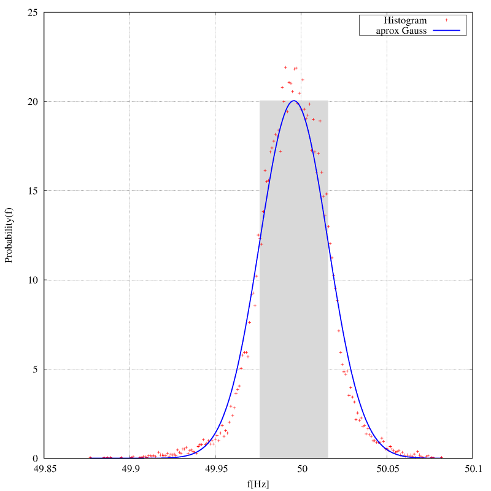
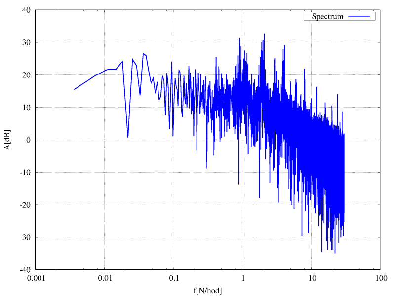
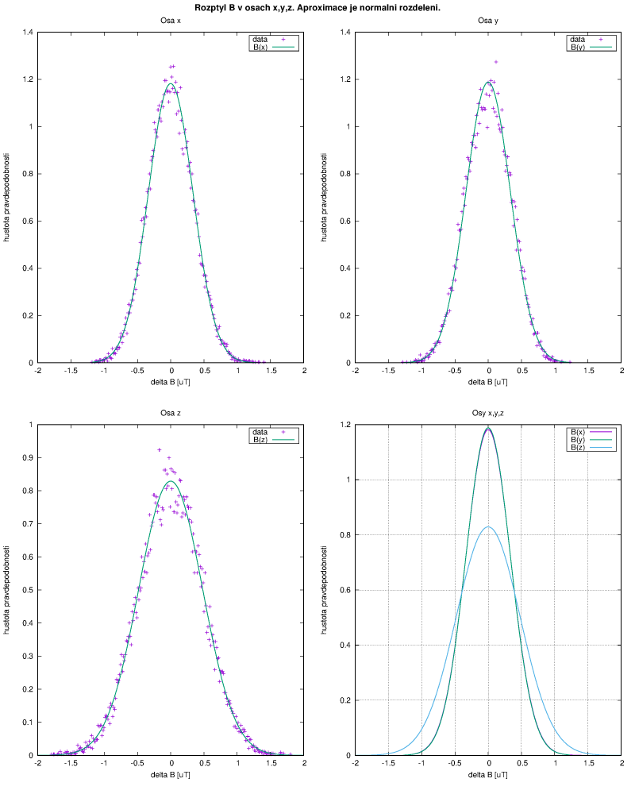
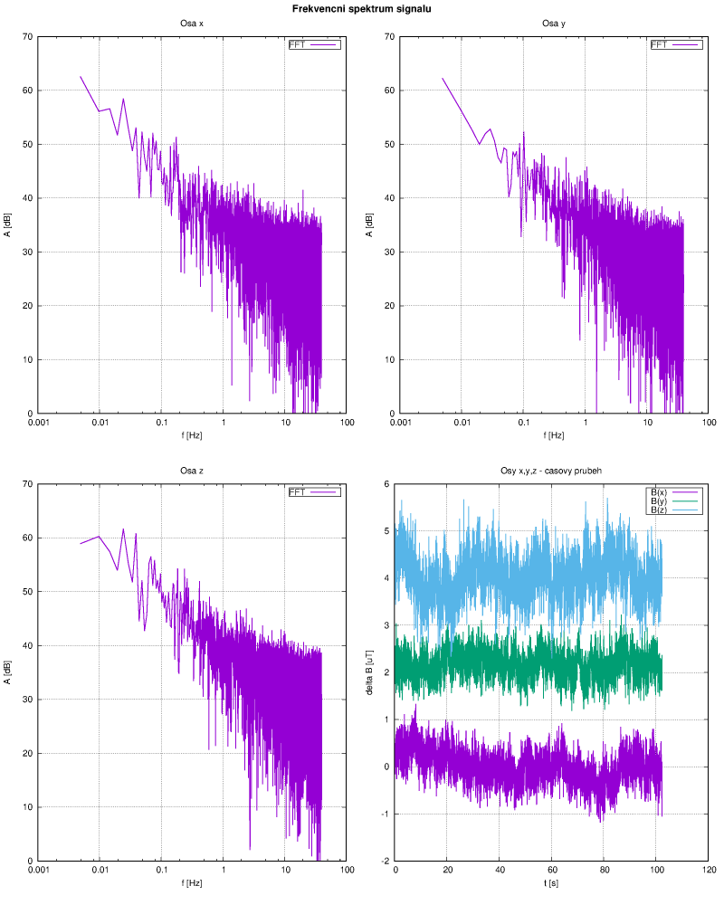

Ve své podstatě je to klasická úloha ze střední školy. Jen těch měření je o něco víc, takže je lepší si na to napsat program. Základní předpoklad je, že měření již máme v textovém souboru - zpravidla je do PC posíláme přes sériový port z nějakého zařízení, řízeného mikroprocesorem. Jde to načíst to tabulkového procesoru a zpracovat v něm, ale tady bude ukázáno, že na to jde poměrně jednoduše udělat program v C++, výsledky jsou pak zobrazeny graficky - obrázky reprezentují potřebné závislosti a jsou přehlednější. Nehledě na to, že zpracovat desítky tisíc až miliony měření v tabulkovém procesoru je mírně řečeno nešikovné.
Postup je opravdu jednoduchý - data načteme do vhodné struktury se kterou se pak bude dále manipulovat. Naměřené hodnoty x pak prostě sečteme a součet vydělíme počtem měření N.
\[ x_0 \approx \bar x = \frac {1}{N} \sum_{n=1}^N x_n \tag{1} \]
Aritmetický průměr $\bar x$ souboru hodnot $x_n$ pro $ n \in \langle 1,N \rangle $, získaných při N opakovaných měřeních téže veličiny za stejných podmínek, určuje nejpravděpodobnější hodnotu měřené veličiny $x_0$. Dále pro každé měření vypočteme odchylku (od průměru) $ \Delta_n = \bar x - x_n $ a její kvadrát $ \Delta_n^2 $ a tyto kvadráty opět posčítáme. Je potřeba spočítat výběrovou směrodatnou odchylku jednoho měření s :
\[ s = \sqrt { \frac {1}{N-1} \sum_{n=1}^N { \left( \bar x - x_n \right) }^2} \tag{2} \]
Ano, zatím je to taková ta jednoduchá tabulka, možná si ze školy ještě pamatujete (byla otrava všecho ručně počítat) - například :
| n | $x_n$ | $\Delta_n = \bar x - x$ | $\Delta_n^2 = {(\bar x - x)}^2$ |
| 1 | 50.042 | -0.0462 | 0.002137 |
| 2 | 50.057 | -0.0612 | 0.003749 |
| 3 | 50.052 | -0.0562 | 0.003161 |
| 4 | 50.039 | -0.0432 | 0.001868 |
| 5 | 50.034 | -0.0382 | 0.001461 |
| 6 | 50.029 | -0.0332 | 0.001104 |
| 7 | 50.033 | -0.0372 | 0.001386 |
| 8 | 50.022 | -0.0262 | 0.000688 |
| 9 | 50.013 | -0.0172 | 0.000297 |
| 10 | 50.017 | -0.0212 | 0.000451 |
| ... |
Pokud má měřená veličina normální rozdělení, zjednodušeně - velké odchylky od střední hodnoty jsou málo pravděpodobné, pak pro hustotu pravděpodobnosti tohoto rozdělení p(x) platí vzorec
\[ p(x) = \frac{1}{\sigma \sqrt{2 \pi}} \Large{e^{-\frac{{ \left( x-x_0 \right)}^2}{2 \sigma^2}}} \tag{3} \]
přičemž matematikové tvrdí, že nejlepší odhad směrodatné odchylky (označuje se také jako střední kvadratická chyba) je $ \sigma \approx s $. Tím máme hotovy odhady prvních dvou centrálních momentů, což by pro normální rozdělení mělo stačit. Pokud je pochybnost o tom, zda je rozdělení normální, pak lze vypočítat centrální momenty vyšších řádů, resp. jejich odhady. Pozn. Ze všech centrálních momentů lze zpětně zrekonstruovat celé rozdělení pravděpodobnosti, ale tím se nebudu zabývat.
Výběrová směrodatná odchylka aritmetického průměruje je
\[ s_{\bar x} = \frac{s}{\sqrt N} = \sqrt {\frac {\sum \Delta_n^2} {N \left( N - 1 \right) }} \tag{4} \]
a to se často používá při zpřesňování měření jejich opakováním např. u AD převodníků (princip sigma - delta je tom postaven i když tady ani tak nejde o chybu jako takovou, ale spíš o počet efektivně konvertovaných bitů a to se počítá přes SNR - je to závislé na použité metodě filtrace a dává to evidentně lepší výsledek) i jinde. Je dobré si ale uvědomit, že sem nejsou zahrnuty systematické chyby - např. nelinearita AD převodníku a jak už bylo uvedeno, měřená veličina musí mít normální rozdělení. Proto je dobré podívat se jak jsou naměřené hodnoty rozděleny - uděláme si tabulku, kde v ose x vyneseme naměřené hodnoty a v ose y bude počet měření, která padnou do intervalu $ \langle x, x + \Delta x ) $, přičemž $ \Delta x $ volíme v digitálním věku jako 1 LSB měřené veličiny. Hodnoty v osách x a y je potřeba normalizovat (popsáno v programu) tak, aby to odpovídalo vzorci (3) pro p(x) - ten je také normován a to tak, aby integrál přes všechna x byl právě roven 1. To je logické, protože pravděpodobnost toho, že něco naměříme musí být právě jedna. Pokud si z toho uděláme obrázek, kde budou jak naměřené hodnoty, tak i vypočtené podle vzorce (3), je hezky vidět, zda je rozdělení normální nebo ne. Samozřejmě pokud bude veličina kolísat o 1 LSB, moc toho vidět nebude, ale můžeme udělat frekvenční analýzu, tedy spektrum a posoudit použitelnost metody z něj.
Je další charakteristika toho, co měříme. Aby to šlo udělat, musíme měřit v ekvidistantních časových intervalech (konstantní vzorkovací frekvence). Princip je jednoduchý - nad naměřenými daty provedeme rychlou Fourierovu transformaci a výsledek vyneseme do grafu. Co se od toho dá očekávat
V zimě jsem zkoušel jestli je možné s dostatečnou přesností měřit tak nízkou frekvenci jako je 50 Hz a jak se tato frekvence mění s časem. Frekvence by měla být uměle dorovnávána tak, aby byla v dlouhodobém průměru opravdu přesně 50 Hz. Měření byla zapisována po jedné minutě po dobu zhruba 14. dnů. Histogram je na následujícím obrázku

Rozdělení je tedy opravdu téměř normální, to, že průměr není přesně 50 Hz je zřejmě způsobeno tím, že jako frekvenční normál byl použit jen klasický krystalový oscilátor mikroprocesoru a ten není nijak přesný. Nicméně $ \sigma = 0.02 Hz $ je docela velká hodnota, pro jistotu se ještě počítají nevychýlené odhady centrálních momentů 3. a 4., což je šikmost (0.19) a špičatost (1.28). Jsou to bezrozměrná čísla udávající jak moc se rozdělení odchyluje od normálního. Nejsem statistik, takže netuším, jak je to podstatné, ale i z obrázku je vidět, že naměřené hodnoty v histogramu jsou opravdu tak nějak špičatější. Na dalším obrázku je frekvenční spektrum

Protože je šum způsoben vnějšími zásahy (regulace) je vidět, že se snaží dorovnávat v určitých intervalech, je tam zřejmá perioda jedné hodiny a kratší, ale i jednoho dne. Není to však moc markantní když si uvědomíme, že průměr má hodnotu 180 dB.
Jestliže v prvním případě šlo o přesné měření veličiny, která se v čase nějak mění a bylo potřeba určit charakter těchto změn, zde je to jinak. Technika nám přinesla spoustu digitálních udělátek, která dávají na výstupu číslo s velkým počtem cifer (bitů) ale ne všechny poslední bity jsou platným vyjádřením skutečně měřené hodnoty dané veličiny. Určité předzpracování dat např. mikroprocesorem se jaksi předpokládá automaticky, protože zde už nejde prostě přečíst hodnotu a zobrazit ji na displeji tak jak to dělá třeba primitivní digitální voltmetr. Tomuto voltmetru, pokud se měřená veličina - napětí - nemění, se údaj na displeji též nemění, maximálně se střídají dvě hodnoty, pokud je napětí jaksi na "hraně".
Magnetometr (a jiná digitální čidla jako jsou akcelerometry, barometry, gyroskopy aj.) funguje jinak. Měření (v tomto případě magnetické indukce) probíhá relativně často, data jsou ukládána do registrů s relativně velkou šířkou a odtud je můžeme nějak - v tomto případě po sériové sběrnici SPI - vyčítat. A i když je magnetometr umístěn v relativně stabilním magnetickém poli Země, jednotlivá měření se liší ne o jeden LSB, ale o desítky. Aby bylo jasné co z toho lze použít, jak je to možné průměrovat a co už je nutné zahodit je potřeba určit výběrovou směrodatnou odchylku jednoho měření. Měříme vektor B magnetické indukce, ten má 3 složky (v osách x, y, z), proto je potřeba postup z předchozího příkladu 3x zopakovat. V následujícím obrázku jsou zpracovány do histogramu data z měření, které probíhalo se vzorkovací frekvencí 80 Hz po dobu několika minut.

Je evidentní, že magnetometr dává přesto hodnoty s normálním rozdělením pravděpodobnosti. Vypočtené hodnoty šikmosti a špičatosti jsou v řádu setin, špičatost je záporná, takže větší odchylky od průměru jsou méně pravděpodobné než u čistě normálního rozdělení, ale je to zanedbatelné, hodnota je malá, jiný kus to může mít jinak. Jak je to uvnitř zařízeno těžko říci, fyzikální princip měření se mi nikde nepodařilo najít, což je docela škoda. Ale i tak je vidět, že měření asi není prováděno v ortogonální bázi - hodnoty v osách x a y mají rozdělení takřka stejné, v ose z se liší - je patrná větší nepřesnost. To odpovídá i dokumentaci výrobce.
Aby nedošlo k nedorozumnění - i když je rozdělení pravděpodobnosti hodně přesně normální, ani tady se nedá zpřesňovat výsledek nějak přehnaně. Magnetometr má z principu podstatné systematické chyby, které je potřeba kompenzovat kalibrací. Většinou se používá jako kompas, magnetické pole Země má velikost zhruba 60 uT, chyba po kalibraci může být pod 1 uT, takže se to zdá být použitelné. Postup kalibrace zde nebudu uvádět, byla by to další kapitola plná vektorové algebry. Jen krátce - není nutné znát přesně absolutní hodnotu velikosti B, ale jen poměry hodnot v jednotlivých osách. Dalším problémem je offset měření způsobený okolními feromagnetiky a rušivými proudy v zařízení. Prostě je s tím docela dost práce. Na posledním obrázku je spektrum naměřeného signálu v jednotlivých osách

a vpravo dole je pro názornost i časový průhěh. Spektrum je opravdu růžový šum. Kdyby mě to bavilo, bylo by lépe nasbírat data za delší období a podívat se zda bude pro nižší frekvence hodnota také růst. Pak by ovšem měla kalibrace v čase jen omezenou platnost. Dá se to však předpokládat i tak. Prostě tato relativně levná čidla nejsou měřidla, jsou to jen indikátory a podle toho se k nim budeme chovat.
Ačkoli jsem v minulých létech prováděl podobným způsobem analýzu dat z různých čidel a udělátek, nepodařilo se mi najít příklad, který by se pro ukázku choval nějak výjimečně. Všude se objevuje normální rozdělení a růžový šum. Nakonec přidám i zabalené zdrojáky. Když to bude chtít někdo použít, může si s tím dělat co chce. Nejsou u toho žádné komentáře, kód je celkem průhledný i když druhý příklad je jen trojí opakování prvního, je zřejmé, že čitelnost se tímto rozšířením dost zhoršila. Nemá cenu z toho dělat nějakou obecnou knihovnu, byl by to neprůhledný moloch a některé vlastnosti by tomu stejně chyběly. A jak jsem konstatoval už na začátku, většina lidí to dělá stejně přes nějaký kancelářský balík. Možná by byl lepší a univerzálnější skript v pythonu, ale měl jsem to v C++ už hotové, tak proč to nepoužít. Lidi, co se zabývají mikroprocesory obvykle C ovládají, ale v čistém C mi to přijde víc ukecané a v tom C++ nejsou žádné použity žádné záludnosti, spíš byla snaha to co nejvíce zprůhlednit. Pokud to někomu bude připadat napsané blbě, tak nechť to prostě nepoužije a udělá si to po svém. Je vlastně šablona programu na jedno použití, takže nějaké ošetřování chyb opravdu chybí. Pro FFT není použita obvyklá knihovna fftw, ale rekurzívní algoritmus na 25 řádcích, který sice není optimální, ale funguje a mě se líbí.